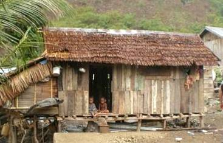

Madera, otro [WO]
Cualquier tipo de construcción de madera que es conocido pero cuya descripción no encaja con las definiciones de los otros tipos de construcción de madera listados en esta tabla.

Edificio de madera, Padang, Indonesia (J. Bothara)